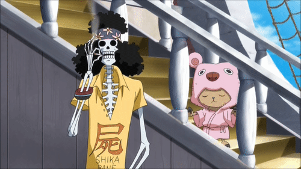

Who is Brook?
Brook is a fascinating character in the One Piece anime and manga series. He is a skeleton musician who becomes a member of the Straw Hat Pirates after meeting them on their journey. Brooke was originally a pirate musician who died and became a skeleton due to a mysterious power of the Yomi Yomi no Mi Devil Fruit. However, he was able to return to life thanks to the power of the fruit.
Brook is an incredibly talented musician and plays the violin as his instrument of choice. He also has the ability to hypnotize his opponents with his music, making him a formidable foe in battle. Despite his undead status, Brooke is full of life and humor. He has a love for all things music and is often seen playing and singing in various situations.
One of the most interesting things about Brooke is his tragic backstory. He spent 50 years as a wandering skeleton before meeting the Straw Hat Pirates. During that time, he was incredibly lonely and desperate for human interaction. He even learned to play music in the hopes of finding someone to listen to him. When he finally met the Straw Hat Pirates, he was overjoyed to have found companionship and a sense of belonging.
Overall, Brook is a unique and lovable character in the One Piece universe. He adds a lot of personality and humor to the story and is a beloved member of the Straw Hat crew.